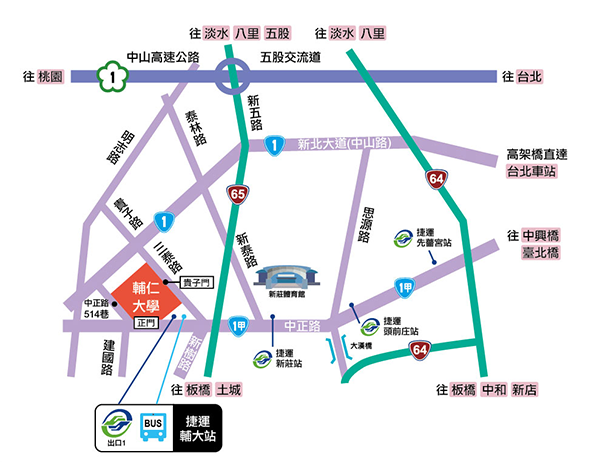

| 捷運站 | 轉乘公車 |
|---|---|
|
輔大站 (輔大週邊公車) |
《捷運接駁公車》： 藍2(新莊-捷運台大醫院)、橘21(迴龍-新北產業園區) 《台北--輔大》： 111(新莊-陽明山)(例假日行駛)、235(國父紀念館-新莊)、299(輔大-永春高中)、299區間車(輔大-台北車站)、513(輔大-捷運台大醫院站)、615(丹鳳-台北車站)(假日停駛)、618(新莊-士林)、635(迴龍-台北)、636(迴龍-圓環)、637(五股-台北)、638(五股-捷運南京復興站)、638副線(五股-捷運輔大站)、639(樹林-北門)、663(國父紀念館-新莊)、797(五股-市政府)、799(樹林-捷運西門站)、801(五股-松山機場)、758(五股-麟光) 《板橋--輔大》： 99(板橋-新莊)、802區間車(新莊-捷運新埔站)、810(土城-迴龍)、842(新莊-捷運新埔站)、845(新莊-捷運新埔站) 《新莊--輔大》： F201(新莊區公所-福德宮) 《樹林--輔大》： 800(樹林-捷運輔大站)、859(泰山-樹林)、985萬大樹林線(捷運輔大站-捷運龍山寺站) 《三峽--輔大》： 802(三峽-捷運新埔站) 《淡水--輔大》： 880(樹林-淡海) 《桃園--輔大》： 5009(桃園-新莊)、1803(中壢-基隆) |
| 台北車站 | 513(輔大-捷運台大醫院站)、299(輔大-永春高中)、299區間車(輔大-台北車站)、615(丹鳳-台北車站)(假日停駛) |
| 西門站 | 235(國父紀念館-新莊)、513(輔大-捷運台大醫院站)、635(迴龍-台北)、637(五股-台北)、663(國父紀念館-新莊)、797(五股-市政府)、799(樹林-台北)、藍2(新莊-捷運西門站) |
| 民權西路站 | 618(新莊-士林)、636(迴龍-圓環)、638(五股-捷運南京東路站)、801(五股-松山機場) |
| 新埔站 | 99(板橋-新莊)、802(三峽-捷運新埔站)、802區間車(新莊-捷運新埔站)、842(新莊-捷運新埔站)、845(新莊-捷運新埔站) |
本頁資料來源為：輔仁大學全球資訊網
交通位置
